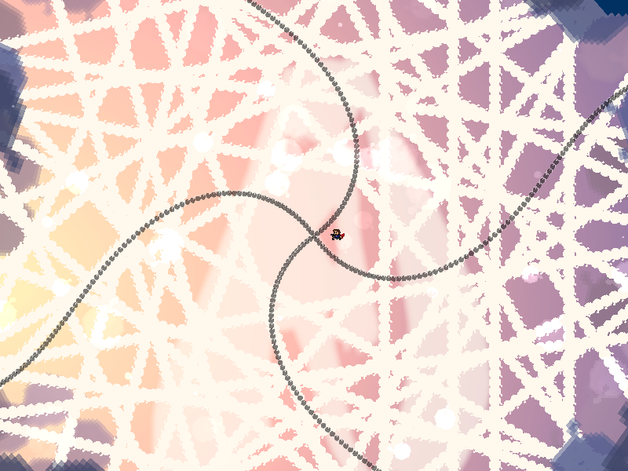
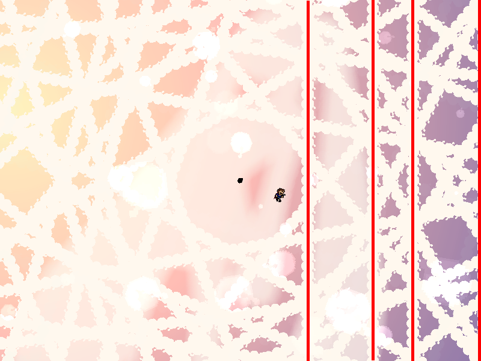
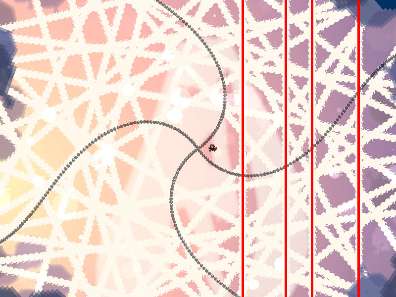
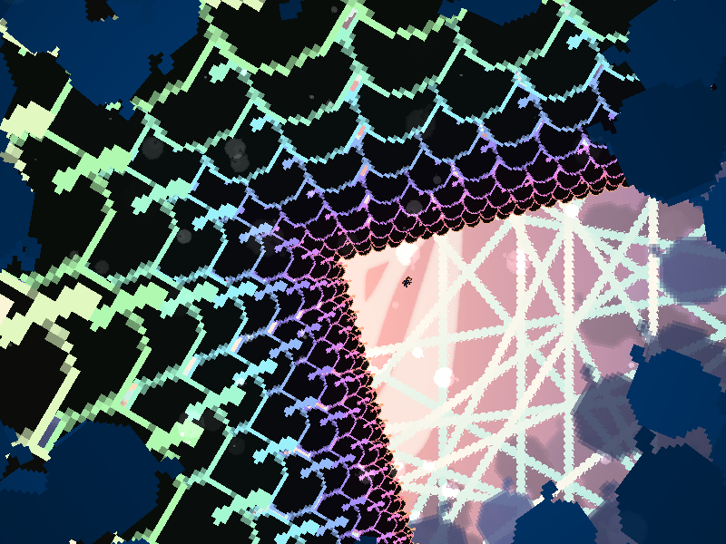

| creator | segment | label | jump |
|---|---|---|---|
| NN | 2:37.90~2:39.90 | Q+A*S | infinite |
水平・垂直を題材とした択一型の弾幕です。
画面に対して常に水平または垂直な直線を見極めることを目的としています。
2:37.50以降、7本、9本、11本、13本の辺により構成される星型多角形状弾幕が、それぞれ画面中央に対して同一の角度を基準とした形状で出現します。
基準とする角度については上下左右4方向のいずれかであり、またこれらは画面回転の影響を受けないため、画面に対して常に水平または垂直な辺が画面の上半分、下半分、左半分、右半分のいずれかに4本存在することになります（fig.11-8.1.a, fig.11-8.1.b）。
なお、これらの星型多角形状弾幕については、基準となる頂点の中心からの距離が一定の条件のもとランダムであり、また当たり判定が存在しません。


2:39.10以降に回避可能な領域に関して、画面に対して常に水平または垂直な辺が画面の上半分に存在する場合は画面中央に対して上側、下半分に存在する場合は下側、左半分に存在する場合は左側、右半分に存在する場合は右側がそれぞれ対応しています（fig.11-8.2）。
なお、星型多角形弾幕が画面回転の影響を受けないのに対して、これらの領域については画面回転の影響を受けるという点に注意が必要です。
